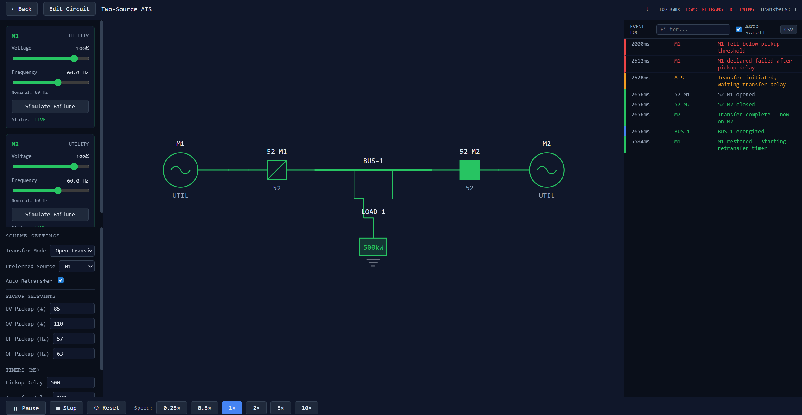

Project 01
View on GitHub →
ATSimulator
React·TypeScript·Power Systems
A browser-based Automatic Transfer Switch simulator with a CAD-style topology editor. Build any switchgear scheme — Two-Source, Main-Tie-Main, Main-Main-Main, or fully custom — and watch open transition, closed transition with sync-check, and fast transfer events execute in real time.
- Graph-based connectivity engine using BFS flood-fill energization
- Snap-to-grid editor with port-aware rotation and orthogonal wire routing
- Variable simulation speed from 0.05× to 5× with timestamped event logging
- ANSI device-function logic (27, 59, 81, 25, 86) and configurable timers